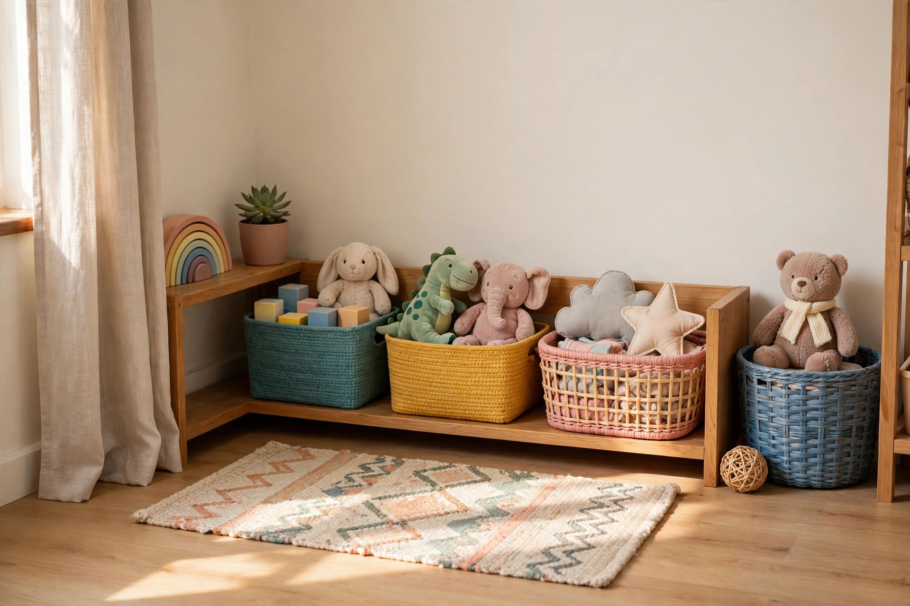

Small Space Storage & Organisation
Small Apartment Kids' Toy Storage Ideas in a Tiny Flat
Intro
Toys in a tiny flat spread faster than anything else. A small box of toys becomes a living-room carpet of bricks, dolls and cars by bedtime, and tidying feels pointless because it will happen again tomorrow. The problem is not the number of toys — it is that there is no system for where they live and when they come out.
This guide has 12 toy storage ideas for a tiny flat — rotation bins, a toy shelf and a five-minute tidy routine. Each idea lists what it costs, and most are under $20. The goal is not a showroom: it is a flat where toys have a home and tidying takes five minutes, not an hour.

1. Rotation bins: only some toys out at once — $15–$20
Keep only a third of the toys out at any time. Three or four bins cost about $18: one bin out in the living room, the rest stored away. Every two or three weeks, swap the bin — the "new" toys feel exciting again, and the flat stays half as messy. Label the bins by type, not by child, so the system survives a new toy arriving.
2. One toy shelf at the child's height — $20–$30
A low shelf or a small bookcase at the child's height holds the toys in use this week. It costs about $25. The child can reach the toys and — just as important — put them back without help. Keep the shelf to five or six items: a full shelf is a shelf nobody tidies. A photo label on each spot shows where each toy belongs.
3. A five-minute tidy routine before bed — $0
Five minutes before bed, everyone tidies together: toys back in their bin, books back on the shelf, the floor clear. A timer makes it a game, and a song makes it a habit. Five minutes a day beats an hour on Sunday, and the flat starts every morning tidy. Keep the routine at the same time every day, so it becomes automatic.
4. Baskets that a child can carry — $10–$15
Small baskets with handles are better than big toy boxes: a child can carry one basket, tip it out, play, and carry it back. Three baskets cost about $12. One basket for bricks, one for dolls, one for cars — one category per basket, so tidying means sorting into three places, not fifty. Soft baskets are safest for small children.
5. A toy hammock for soft toys — $8–$12
Soft toys multiply and fill every bed and sofa. A toy hammock hung in a corner holds twenty soft toys off the floor and off the bed. It costs about $10 and fits with two hooks. Keep the favourites in the hammock and the rest in a bag for rotation. When the hammock is full, a soft toy has to leave before a new one arrives.
6. Lego and small parts in labelled jars — $5–$10
Small parts — Lego, beads, puzzle pieces — are the hardest toys to tidy and the easiest to lose. Clear jars or small boxes with lids cost about $8 for a set and keep each set together. One jar per set, labelled with a picture for children who cannot read yet. Jars stack on a shelf and never spill the way an open box does.
7. A play mat that folds into a bag — $15–$25
A play mat with a drawstring folds up into a bag with all the toys inside it. It costs about $20 and is the fastest tidy there is: pull the string, and the floor is clear. It works best for bricks and small figures. Keep the mat in the living room, so play stays in one place instead of spreading through the flat.
8. Books in a forward-facing shelf — $15–$20
Children choose books by their covers, so a forward-facing shelf — where the covers face out — means they actually pick books up. A small forward-facing shelf costs about $18. Keep five or six books on it and rotate them weekly. Books kept spine-out on a high shelf are books nobody reads.
9. A craft caddy that lives in one place — $10–$15
Crayons, paper, scissors and glue spread everywhere if they have no home. A caddy with a handle costs about $12 and holds all the craft supplies in one place. The caddy comes out for craft time and goes back on its shelf when craft time ends. One caddy per child stops the supplies from mixing into one big mess.
10. Under-bed boxes for the toys not in use — $12–$18
The toys in rotation live under the bed in two flat boxes. Two boxes cost about $15. This is where the rotation bins live — out of sight, out of the way, and easy to swap. Label the boxes, so the swap takes two minutes. The under-bed space is free storage that most tiny flats waste.
11. A donation box that is always out — $0
Keep one bag or box in the wardrobe for toys the child has outgrown. When a toy has not been played with for a month, it goes in the bag. When the bag is full, it goes to a charity shop or a friend. The rule is gentle and the child can help choose. One toy out for every new toy in keeps the total from growing.
12. The floor is not storage — $0
The simplest rule of all: the floor is for playing, not for storing. Toys live on the shelf, in the basket or in the bin — never on the floor overnight. When everything has a place, the five-minute tidy actually works, because there is a place to put everything back. A flat where the floor is clear in the morning feels bigger all day.
Conclusion
Toy storage in a tiny flat is a system, not a piece of furniture: fewer toys out, rotation bins under the bed, baskets a child can carry, and a five-minute tidy every evening. Four bins and a shelf cost about $40 and can cut the daily mess in half. Start with the rotation bins today — the flat will feel bigger by bedtime.
Budget recap
- Rotation bins + baskets: ~$30 - Low toy shelf: ~$25 - Toy hammock + play mat: ~$30
Total for a toy storage system: ~$40–$60 — or ~$18 with bins alone.
Pinterest pin titles
- Small Apartment Kids' Toy Storage Ideas in a Tiny Flat
- 12 Toy Storage Ideas for Tiny Flats (5-Minute Tidy Included)
- Toys Everywhere? 12 Storage Ideas That Actually Work in Small Flats